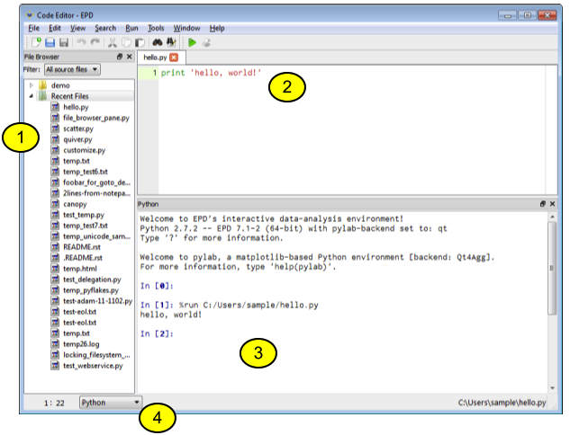
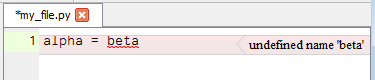
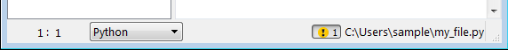

EPD 8 users spend most of their GUI time in this window. You can write Python code in the Code Editor, run your code in the Python panel or experiment line-by-line using IPython’s fast interactive help and discovery.
Please note these key pieces of the Code Editor (more details below):
1. File browser pane: shows one or more directories and any recently opened files. Double-click a file to open it in the Code Editor.
2. Code editor: a general purpose text-editor with additional features specifically for editing Python code.
3. Python pane: integrates an IPython (Interactive Python) prompt that lets you quickly test code, experiment with ideas, and run code directly from the editor.
4. Editor status bar: shows information about the the file currently displayed in the code editor: line and column (1 and 22, respectively, in the image above), file type, and file path and name.
The File Browser and Python panes can be dragged and dropped to different positions within a Code Editor window, or to outside its borders. When you are dragging a pane, the location where it would dock is hightlighted in blue. These panes can also be hidden using their small “X” icon, or hidden/shown from the View menu.
The type of the current file is automatically determined based on the file’s extension (.py or .c for example) but can be manually changed by selecting a different type from the popup menu in the editor status bar. Changing the file type enables language-specific features, such as auto-completion of Python code and syntax highlighting for many languages.
For Python files, the editor frequently runs the pyflakes checking utility in the background, and marks syntax errors/warnings with red/yellow squiggly underlining.
A small “!” icon in the status bar shows you the total number of errors and warnings in the current file. If you click this icon, then you will toggle the error description at the right of each affected line.
As you type code, you can use the Tab key to complete the name behind the cursor. If there are multiple possible completions, a small selection widget will pop up, allowing you to choose one completion. Tab completion for imports works as follows:
from numpy import lin<TAB>
If there is a syntax error in the code, tab completion can fail. Tab completion is not performed inside comments or strings.
To see the documentation string for a function or class, you can do the following:
linspace<TAB>()
# or
linspace(<TAB>)
# or
linspace()<TAB>
This will show a tooltip with the documentation for the function. However, once any function arguments are supplied, pressing “Tab” will no longer display the docstring for the function. The following case will also not display documentation:
linspace(<TAB>
# some other code below
This is because the code is syntactically wrong since the parenthesis is not closed. In summary, the best way to get help strings is to finish writing the function, supply no arguments and hit tab as shown below:
# Code ...
linspace()<TAB>
# More code.
You can jump to the definition of the name under the cursor, by pressing Ctrl+j (or Cmd+j on Mac OS X). For example:
from collections import namedtuple
namedtuple<Ctrl+j>(x=1)
This will open the collections.py file in another editor tab at the definition of the function. Note that you can press Ctrl+j anywhere on the symbol. This should also work for variables.
The Find widget (reached from the Search menu), contains a small magnifying glass icon. Click this to specify Find options (Case, Word, Wrap around, and Regex).
Select a block of text using Shift+arrow key or the mouse, and then use the “Comment lines” command from the Edit menu (shortcut key Ctrl+/; Cmd+/ on Mac OS X) to comment or uncomment the selection. If you want to simply comment/uncomment the current line, there is no need to select the block of text.
To indent a block of code, select it, and then press the Tab key to indent it to the right, or Shift+Tab to dedent it to the left.
A code editor bookmark (set in the Window menu) records all the files which are open in one or all editor windows, and the cursor position in each file. This is like a lightweight browser session manager or IDE project manager. It is not used for marking locations of interest in files.
By default the file browser shows all recognized source file types (Python, C/C++, FORTRAN, …). This can be changed to show fewer file types or all files by using the “Filter” drop-down menu at the top of the file browser.
For convenient access to your most commonly used files, the file browser is organized by “Top-level Paths”. Initially there is one top-level path for your OS home directory, and one for “Recent Files”. You can set any directory as a top-level path by browsing to it, right-clicking, and selecting “Add this as top level”.
The Python session is an IPython QTconsole. By default, it starts in Pylab mode with an interactive GUI backend. This permits you to run and interact with GUI programs while continuing to enter commands at the IPython prompt (e.g. to inspect or modify the GUI’s data). See IPython’s GUI event loop support.
The default Pylab GUI backend is WX. From the EPD 8 GUI preferences dialog, you can change Pylab to use an interactive QT4 GUI backend, or to display non-interactive inline SVG graphics.
Pylab mode imports more than 900 numpy and matplotlib names into the console namespace, which can save typing but can lead to confusion when the same names (e.g. sum, min, max, any, all, int) are also Python builtins.
From the preferences dialog, you can disable Pylab mode. If you do this, you can still get the benefits of GUI event loop support, by using one of these IPython “magic” commands: %gui wx or %gui qt or %gui inline.
If you right-click in the Python shell, you will see a command to change the shell’s current directory to match the location of the current file in the Code Editor; this uses IPython’s magic “cd” command. For example, this can be convenient when running a demo program which assumes that its data files are in the current directory.
The Run menu contains commands to run the current file, or the currently selected text, within Python shell (the user Python enviroment).
The Run menu contains a command to Interrupt a program running in the IPython shell.
The Run menu also contains a command to Restart the IPython kernel (user Python environment). This can be useful if a running program is frozen and not interruptible, or has corrupted the user Python environment. Note that if you restart the IPython kernel, all computed values in the Python session will be lost.